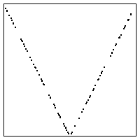
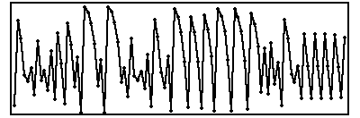
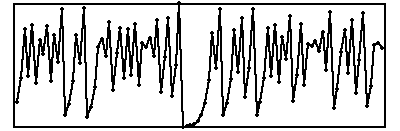

| 9. The graph of (a) goes near or through the point (1,1), so the corresponding time series would have successive points near 1. This is time series (c). |
| The graph of (b) goes near or through the point (0,0), so the corresponding time series would have successive points near 0. This is time series (d). |
| (a)
(b) |
| (c)  |
| (d)  |
Return to Homework 8 Practice.